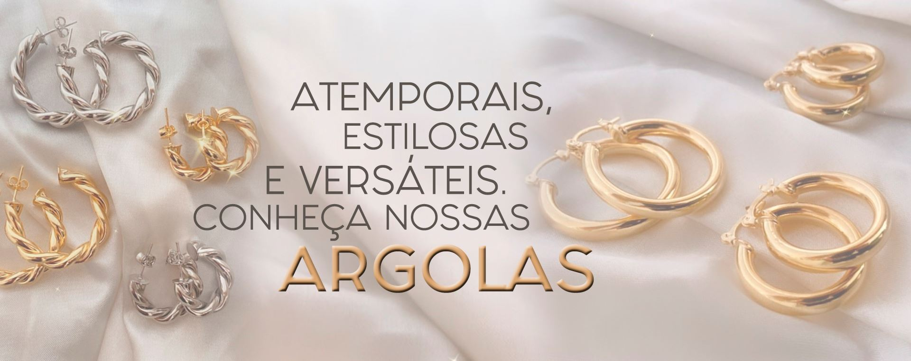

O Brinco Earcuff com Design de Folha Cravejado folheado em Ouro 18k. Este earcuff é uma joia única, que oferece um toque de natureza e sofisticação ao seu visual. Com um design inspirado em folhas, este earcuff é cravejado com cristais brilhantes que capturam a luz de forma encantadora. A folheação em ouro 18k confere um acabamento refinado e durável, garantindo que esta joia mantenha seu brilho por muito tempo. Se você deseja adicionar uma joia única e inspirada na natureza à sua coleção, o Earcuff com Design de Folha Cravejada folheado em Ouro 18k é a escolha perfeita.
Apresentamos o Mix de Braceletes Inspirações, um conjunto exclusivo que irá adicionar um toque de estilo e elegância ao seu visual. Composto por uma seleção cuidadosa de braceletes, este mix é perfeito para quem busca sofisticação e versatilidade. Cada bracelete é único e traz consigo uma história e um significado especial. Feitos com materiais de alta qualidade, como metais nobres e pedras preciosas, esses acessórios são verdadeiras obras de arte. Seja para uma ocasião especial ou para o dia a dia, o Mix de Braceletes Inspirações é a escolha perfeita para completar qualquer look.
Uma joia que transmite o poder da mulher independente, com um design forte e repleto de glamour.Composta por um design de elos groumet duplo é MARAVILHOSA, uma joia única e que traz muita personalidade para o seu look! Perfeito para usar em ocasiões especiais como jantares, festas, eventos e encontros. Combine com brincos de argola e piercings folheado em ouro 18k para compor um mix poderoso! Use e abuse.
Feito a mão prata 925 é um acessório rústico e feito a mão. Delicado, é uma peça fofa para ser usada todos os dias. Esse anel é confeccionado em prata 925 com banho de ródio. O coração 0,6 cm de largura por 0,4 cm de altura.
Ao longo dos anos a Gianinni Semi-joias enfrentou muitos desafios, mas nunca deixou de levar amor, segurança, confiança e afeto através de joias incríveis para suas clientes. Além disso, o intuito da nossa CEO Letícia Amaro é de encantar, empoderar, valorizar e fazer com que as mulheres sintam-se ainda mais bonitas com seu amor próprio através dos acessórios da Gianinni. Maravilhoso isso, né? É essencial você se amar e sentir-se linda a todo instante.